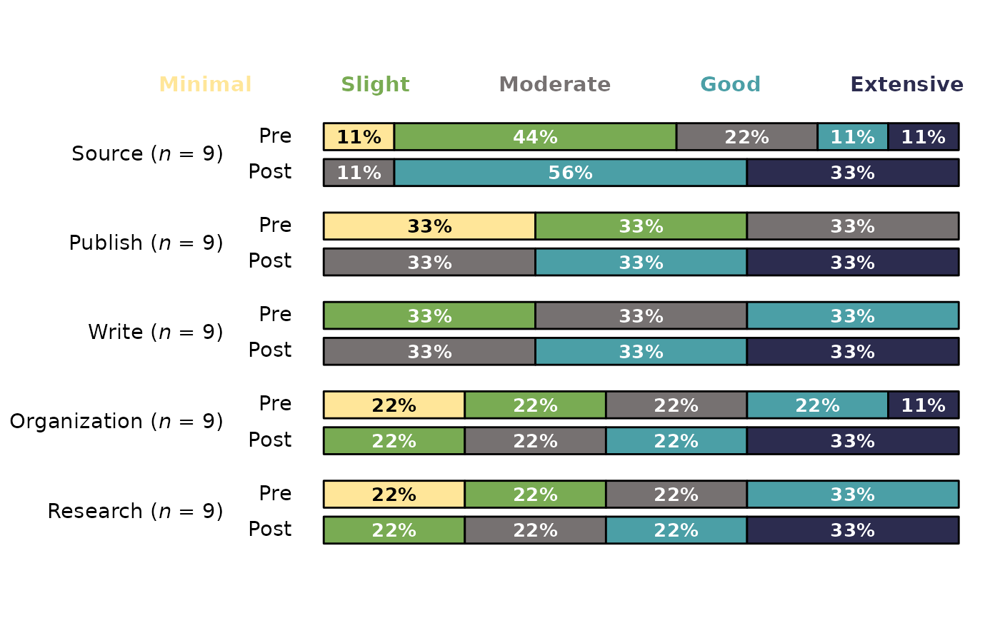
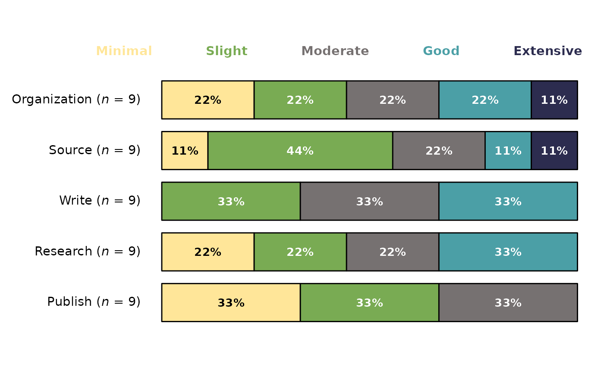
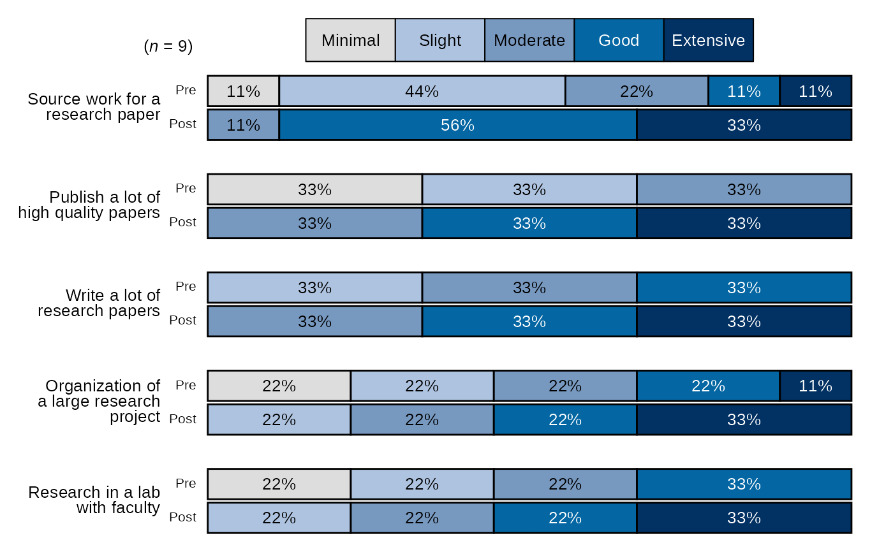
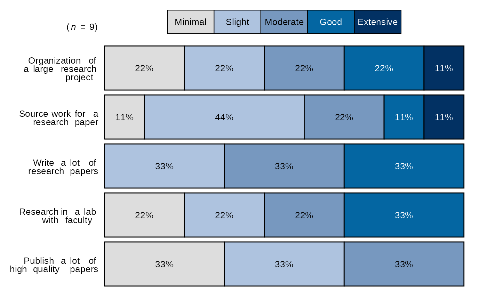

Stacked Bar Chart for Blackstone Research and Evaluation
Source:R/stackedBarChart.R
stackedBarChart.RdstackedBarChart() creates a stacked bar chart and returns a ggplot object with Blackstone Research and Evaluation branding.
Usage
stackedBarChart(
df,
scale_labels,
fill_colors = "seq",
pre_post = FALSE,
overall_n = TRUE,
percent_label = TRUE,
question_labels = NULL,
question_order = FALSE,
width = NULL
)Arguments
- df
Required, A tibble/data frame of survey items that are categorical/character variables, that will be inserted into a stacked bar chart with Blackstone Research and Evaluation branding.
- scale_labels
Required, a character vector of labels for the response scale, must be in the desired order, e.g. if you have a 5 item scale of minimal to extensive it should look like this:
levels_min_ext <- c("Minimal", "Slight", "Moderate", "Good", "Extensive").- fill_colors
Default is "seq", If "seq", the color scale for the fill for each bar is set to blue sequential palette. If set to "div", it is the blue-red diverging color palette, otherwise the user can input a character vector of hex codes at least a long as the character vector passed to the
scale_labelsargument.- pre_post
Logical, default is FALSE. If true, returns a pre-post stacked bar chart.
- overall_n
Logical, default is TRUE. If TRUE, returns an overall n for all questions that is in the upper left tag of the plot. If False, adds n to each question/item after the respective labels.
- percent_label
Logical, default is TRUE. If FALSE, labels the bars with the number of answers per response.
- question_labels
Default is NULL. Takes in a named character vector to both supply labels the questions and sort the order of the questions. The named character vector should have the new labels as the "name" and the old labels as the "variable" sorted in the desired order of appearing in the plot, first item will appear at the top of the plot. See examples.
- question_order
Logical, default is FALSE. If TRUE, the question order will be taken from the user supplied named character vector passed to question_labels, where the first item will be at the top of the plot and so on. If FALSE, the question order will be the questions with highest positive valenced response options on the top of the plot descending.
- width
Input a value between 0.3 and 0.8 to set the thickness of the bars. Default is NULL.
Value
A ggplot2 object that plots the items into a stacked bar chart and can be exported.
Examples
items <- tibble::tibble(
pre_Organization = c(1, 2, 3, 4, 5, 4, 3, 2, 1),
post_Organization = dplyr::if_else(pre_Organization < 5, pre_Organization + 1, pre_Organization),
pre_Source = c(2, 2, 3, 5, 4, 3, 2, 1, 2),
post_Source = dplyr::if_else(pre_Source < 4, pre_Source + 2, pre_Source),
pre_Publish = c(1, 1, 1, 2, 2, 2, 3, 3, 3),
post_Publish = pre_Publish + 2,
pre_Write = c(2, 2, 2, 3, 3, 3, 4, 4, 4),
post_Write = pre_Write + 1,
pre_Research = c(1, 1, 2, 2, 3, 3, 4, 4, 4),
post_Research = pre_Research + 1
)
items_single <- tibble::tibble(
Organization = c(1, 2, 3, 4, 5, 4, 3, 2, 1),
Source = c(2, 2, 3, 5, 4, 3, 2, 1, 2),
Publish = c(1, 1, 1, 2, 2, 2, 3, 3, 3),
Write = c(2, 2, 2, 3, 3, 3, 4, 4, 4),
Research = c(1, 1, 2, 2, 3, 3, 4, 4, 4),
)
# Set scale_labels for recodeCat function:
# scale_labels as a named character vector, items in correct order:
levels_min_ext <- c(
"Minimal" = "1", "Slight" = "2", "Moderate" = "3",
"Good" = "4", "Extensive" = "5"
)
# bar_scale_labels as just the names from levels_min_ext:
bar_scale_labels <- names(levels_min_ext)
# Question labels as a named vector with the naming structure
# like this: c("new label" = "original variable name"):
question_labels <- c(
"Publish a lot of high quality papers" = "Publish",
"Write a lot of research papers" = "Write",
"Research in a lab with faculty" = "Research",
"Organization of a large research project" = "Organization",
"Source work for a research paper" = "Source"
)
# Recode the numeric to factor variables using the levels from levels_min_ext and
# select the factor variables::
cat_items <- blackstone::recodeCat(items, levels_min_ext) %>%
dplyr::select(dplyr::where(is.factor))
cat_items_single <- blackstone::recodeCat(items_single, levels_min_ext) %>%
dplyr::select(dplyr::where(is.factor))
# Pass the factor variables and the levels to stackedBarChart:
stackedBarChart(
df = cat_items, pre_post = TRUE, scale_labels = bar_scale_labels,
question_labels = NULL, percent_label = TRUE, width = NULL
)

stackedBarChart(
df = cat_items_single, pre_post = FALSE, scale_labels = bar_scale_labels,
question_labels = NULL, percent_label = TRUE, width = NULL
)

stackedBarChart(
df = cat_items, pre_post = TRUE, scale_labels = bar_scale_labels,
question_labels = question_labels, question_order = FALSE, percent_label = TRUE, width = NULL
)

stackedBarChart(
df = cat_items_single, pre_post = FALSE, scale_labels = bar_scale_labels,
question_labels = question_labels, question_order = FALSE, percent_label = TRUE, width = NULL
)
